Method

Large language models (LLMs) are increasingly being used for natural language (NL)-guided robot control, grounding specifications, decomposing tasks, and generating plans for multi-robot systems. However, these pipelines either stop at task decomposition and execution or verify a single plan or controller, leaving it unclear whether the multi-robot behavior satisfies the system requirement under reactive execution. We present an agentic contract-based reactive synthesis framework for multi-robot systems. Given system architecture and NL requirements, a Translator converts them into linear temporal logic (LTL) specifications, and a Decomposer formalizes them into a system-level assume-guarantee (A/G) contract and component-level contracts, followed by a verification pipeline. The pipeline checks whether the generated contracts match the translated specifications, whether the composed component-level contracts refine the system contract, and whether each component-level contract is realizable by a reactive controller. Each failed check returns a traceable witness that localizes the responsible contract for automatic repair with predefined rules, or reports to the Decomposer for LLM-guided repair, iterating until all checks pass. The synthesized controllers are then executed in simulation, with runtime monitors checking behaviors against the contracts. Experiments on three shared-resource tasks show that the synthesized controllers satisfy the specified requirements under the valid environments, demonstrating efficient synthesis with verification feedback, and the framework supports larger multi-robot systems through hierarchical decomposition.
N robots keep working until their battery runs low. During every low-battery episode a robot requests the shared charger, drives to it, and charges once it holds exclusive access. The arbiter guarantees fair, mutually exclusive service, so no robot is ever left waiting forever.
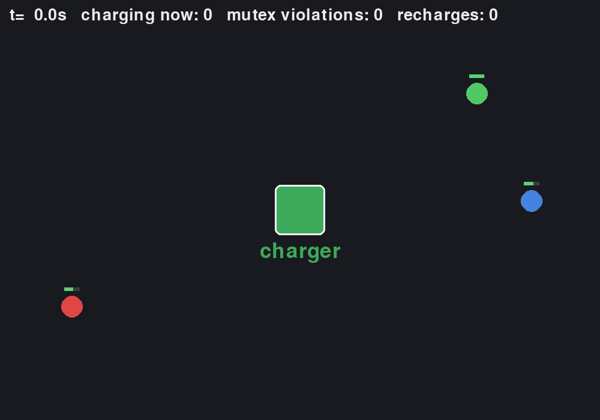
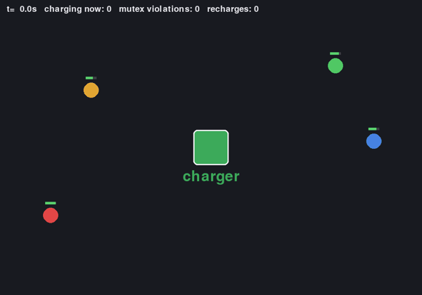
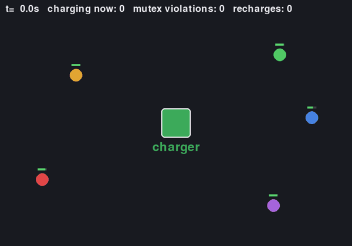
N robots repeatedly cross a single-lane corridor from side A to side B. An arbiter controls entry so that only one robot occupies the corridor at a time and retains each grant until the corresponding crossing is complete. New crossing tasks continue to arrive, and every access request is eventually served, preventing starvation.
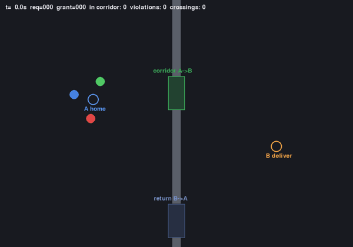
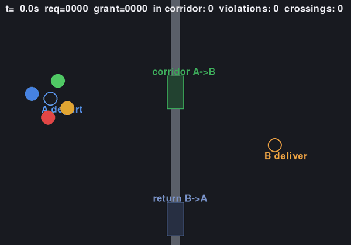
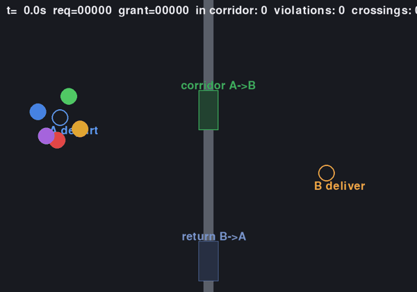
N robots continuously fetch items from a shared shelf and deliver them to a shared dock. Each robot selects an available item at the shelf for pickup, while an arbiter grants exclusive access to the dock so that only one robot may occupy it at a time. A robot may travel toward the dock freely but waits outside until access is granted, and every request is eventually granted.
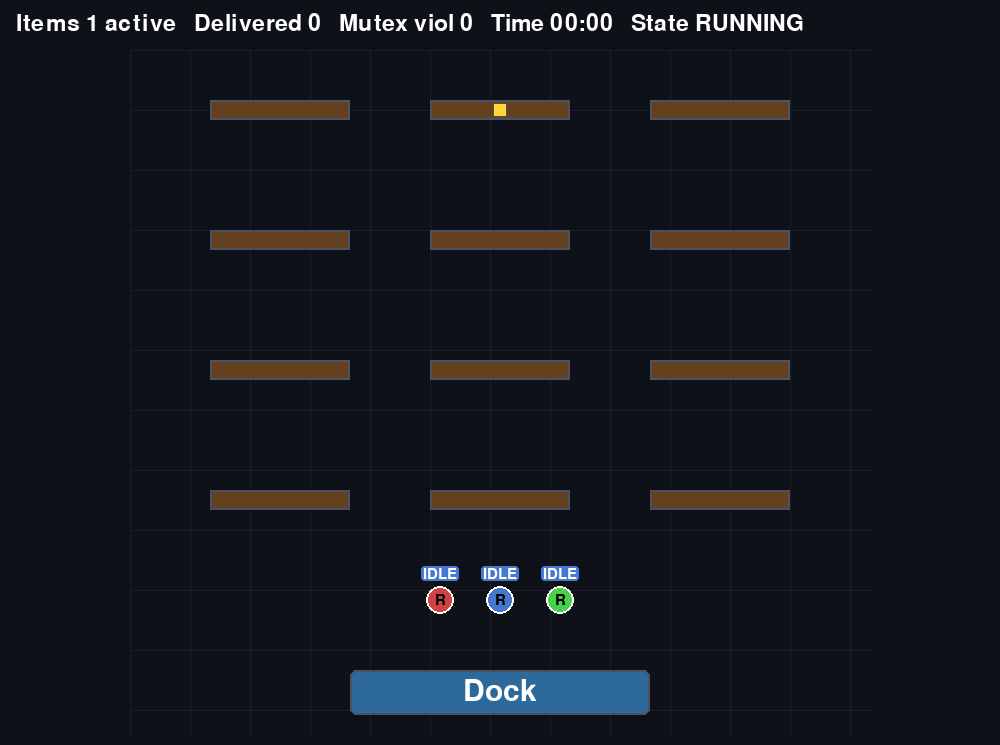
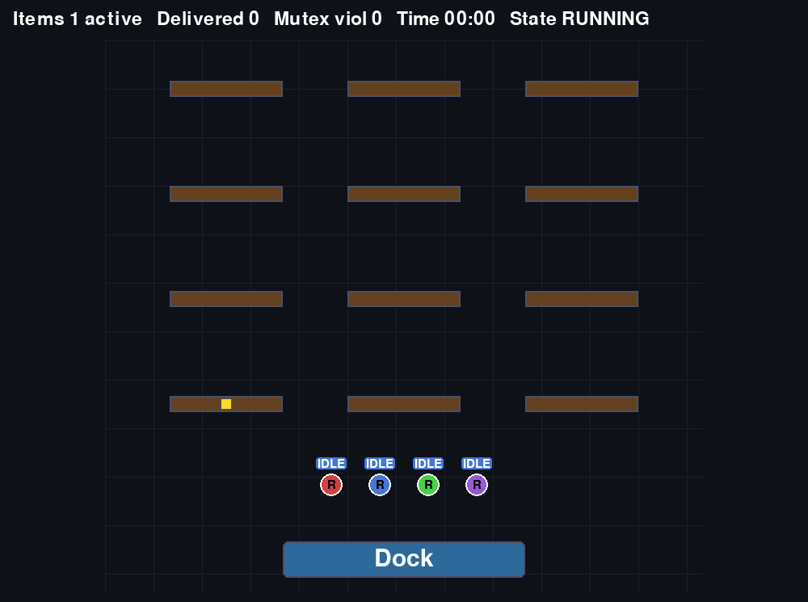
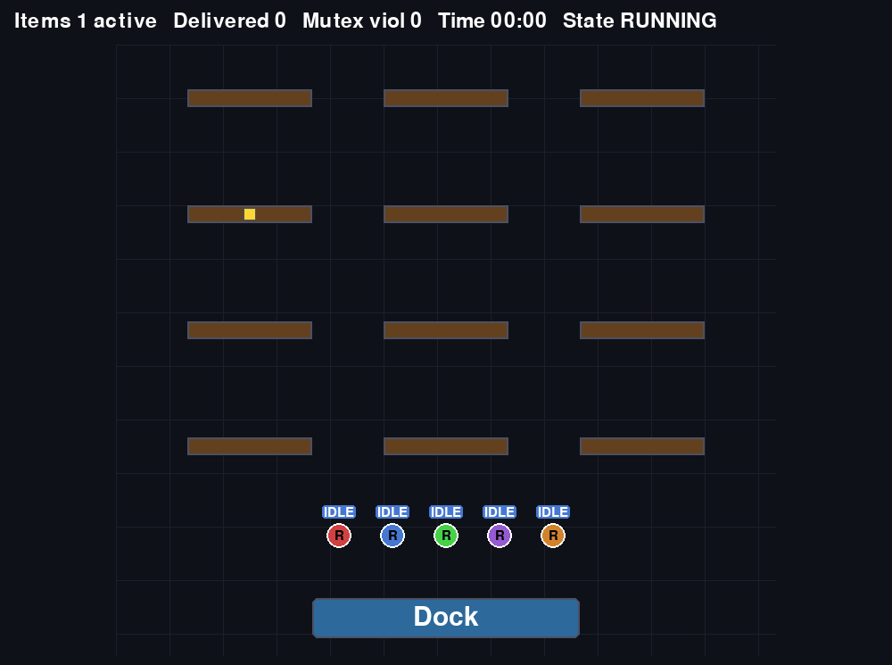
The certified controllers synthesized for the warehouse shelf-and-dock task are discrete finite-state machines defined only over atomic propositions such as being at the shelf, being at the dock, requesting, and holding a grant. They make no reference to how those propositions are grounded in the physical world, so the same certified FSMs and the same dock arbiter, unchanged and without any resynthesis or repair, are reused to coordinate quadrotor drones in a 3D physical simulator instead of ground robots on a 2D control-barrier-function layer. Each drone still only picks up an item once it holds the shelf grant and only docks once it holds the dock grant, and the arbiter still guarantees mutual exclusion and fairness at the dock across N drones, showing that the certified coordination logic transfers directly across physical realizations.
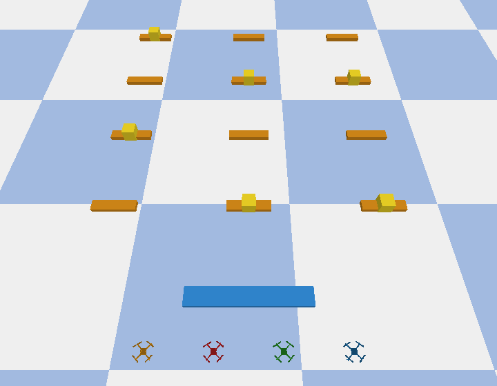
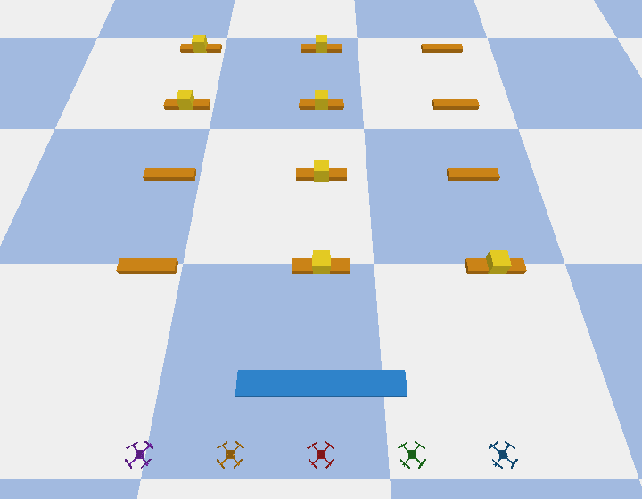